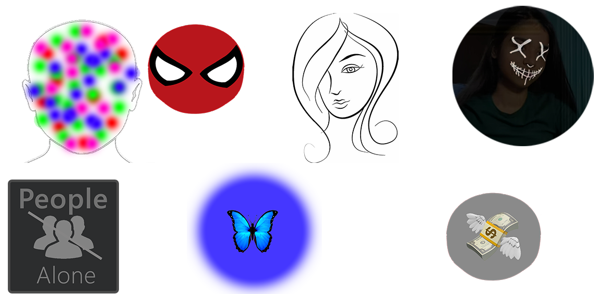
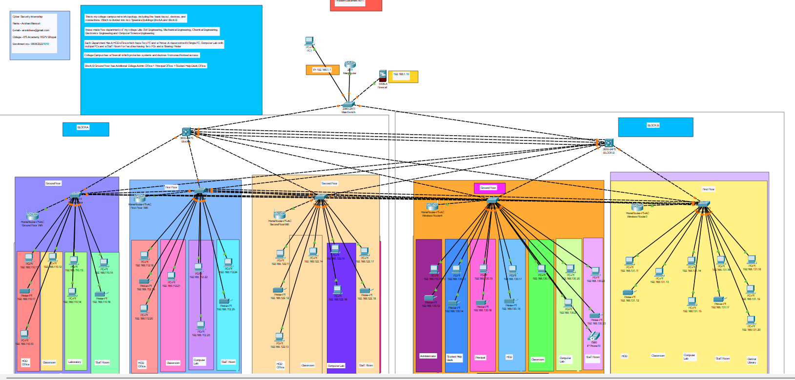

Projects
EduAR
AR Based E-learning Application
Technologies: ARKit, ARCore, Unity, Vuforia, Blender
View Project
RealXR Application
RealXR is a AR/VR Students Club at IPS Academy, Indore
I have Developed it's UI HOME Page and Fixed Bugs in it.
View Project

View Project
AR Experience
Created And Published Many Snapchat AR Experiences which have more than 150 Million Impressions..
Technologies: Lens Studio
View Project

View Project
College Network Topology
Designed and simulated a Secure Network Topology for the College using Cisco Packet Tracer.
Identifying vulnerabilities and proposing mitigation strategies
View Project
File Binder
A Python-based file binder application as a cybersecurity-focused tool.
Technologies: Python, PyQt6, Zipfile, PyInstaller
View Project